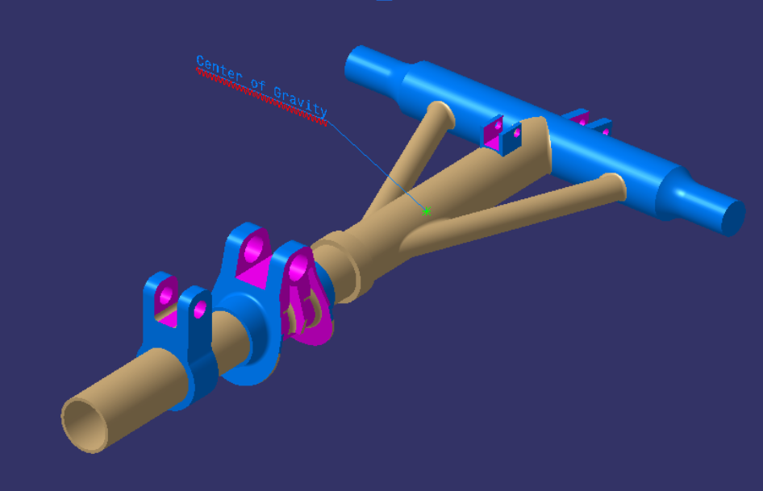
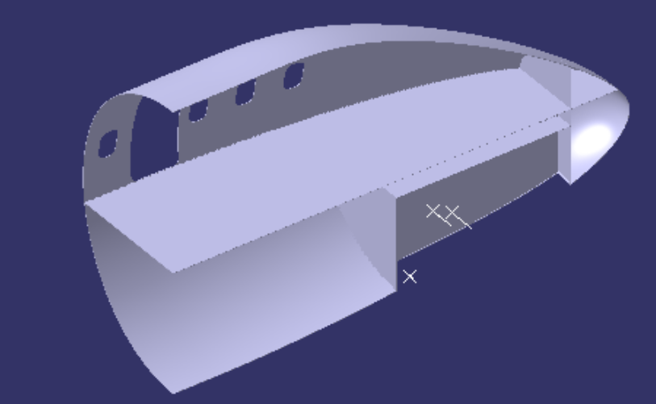
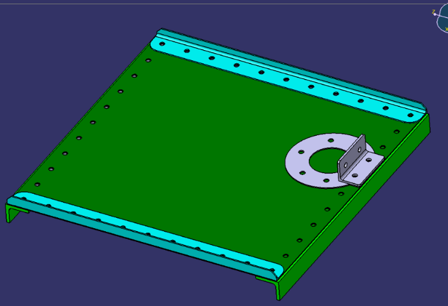

Internships
Boeing — Stress Analysis Intern — May 2026 to August 2026＋
Seat Certification & Compliance Review ＋
- Reviewed aircraft seat certification packages for compliance with applicable FAR regulations and Boeing engineering requirements, evaluating supplier documentation supporting business-class seat certification.
- Evaluated seat load cases and load paths, cross-checking FEM results at seat-leg attachments against supplier analyses, and reviewed CATIA models to verify geometry across drawings, analysis models, and certification documentation.
- Built a Power BI dashboard that automated daily project-status updates from internal tracking software — burndown, KPIs, and delay drivers — removing a weekly manual Excel report from senior engineering meetings.
CATIA Design Studies (class exercises) ＋
Practice models built during a Boeing training course — not production hardware.



Structural Panel Design Exercise — Fastener Selection & Load Path ＋
Project Overview
As part of a week-long Boeing Structures training mock project, I completed a representative aircraft modification from initial requirements through physical installation. The project involved designing a penetration through an existing structural panel for a ventilation duct and developing the bracket, reinforcement, and fastener configuration required to support the installation.
The project simulated the structural design workflow used to translate a coordination-sheet request into a manufacturable and installable solution.
Methodology
-
Defined requirements and constraints
I reviewed the coordination sheet to identify the requested penetration, bracket installation, applied loads, and surrounding structural geometry. I identified additional information needed for the analysis, including web and bracket thicknesses, material properties, and allowable stresses.
I then applied the structural design criteria provided during the training for fastener pitch, edge margins, clearances, reinforcement geometry, and material thickness relationships. I also distinguished between fixed geometry and dimensions that could be modified, allowing the penetration and bracket location to be adjusted within the permitted design envelope.
-
Performed structural analysis
Using the provided vent loads and installation geometry, I determined how the loads would transfer through the bracket into the surrounding structure. I calculated the resulting bending moment and bracket section properties, then evaluated the resulting bending stress against the applicable allowable.
From this analysis, I determined the minimum structural section required and identified the need for additional reinforcement around the penetration.
-
Designed the doubler and restored the load path
I designed a local doubler to reinforce the existing web and restore the load path interrupted by the new penetration. The doubler thickness and overall dimensions were selected based on the existing web geometry, structural requirements, available installation space, and the design criteria provided during training.
I also evaluated the running load through the web and determined the load interrupted by the penetration, which established the load that needed to be redistributed through the doubler and its attachments.
-
Developed the fastener layout
I selected Hi-Lok fasteners and developed the attachment pattern required to transfer load between the web and doubler. The layout was designed while satisfying fastener spacing, edge-margin, penetration-clearance, and installation requirements.
Where possible, I adjusted the bracket and penetration geometry to utilize existing attachment locations, reducing unnecessary modifications while also improving the structural load path.
-
Iterated and verified the final design
I iterated the penetration location, bracket geometry, doubler dimensions, and fastener pattern as a complete system. The final configuration was checked for bracket bending, reinforcement capability, load transfer, fastener arrangement, and compliance with the structural design criteria provided during the training.
-
Fabricated and installed the design
After completing the analysis and finalizing the design, the components were fabricated for physical validation, including 3D printing the designed bracket. I then installed the bracket, doubler, fasteners, and penetration configuration on a representative mock aircraft structure.
This final assembly provided hands-on experience translating an analytical design into hardware and demonstrated the importance of considering manufacturability, accessibility, tolerances, fastener installation, and assembly sequence during the design process.
Outcome
The week-long project took a representative aircraft modification through the complete engineering workflow.
Project Scope & Limitations
This was a one-week training project intended to introduce the structural design and installation workflow rather than replicate the full aircraft modification process. As a result, several aspects of a production design were simplified or provided as assumptions. A real aircraft modification of this type would require significantly more analysis, documentation, testing, and cross-functional coordination before being approved for installation.
Additional considerations in a production environment could include detailed material and temper selection, fatigue and damage-tolerance analysis, additional joint and fastener failure modes, manufacturing and assembly tolerances, corrosion protection, accessibility and maintainability, tooling and installation planning, inspection requirements, and verification of interfaces with surrounding aircraft systems. The design would also undergo formal engineering reviews and require collaboration across Structures, Design, Manufacturing, Systems, Quality, and other relevant teams before ultimately satisfying applicable certification and airworthiness requirements.
The project therefore focused specifically on developing the fundamental structural design process—interpreting requirements, understanding the load path, performing preliminary structural calculations, designing reinforcement and attachments, and translating the resulting design into a physical mock-up.
GE Vernova — Design and Analysis Engineering Intern — June 2025 to August 2025＋
- Performed lifing analysis on turbine blade coatings using ANSYS APDL, including temperature/pressure mapping and structural, creep, oxidation, and LCF simulation, validated against field data.
- Improved component salvageability by modifying tip-weld repair geometry; led a feasibility study on increased weld depth, working cross-functionally with Heat Transfer and Repair Engineering.
- Built a Python script generating 3D response-surface models for creep-deflection prediction, improving deflection-based Operating Impact Factor (OIF) accuracy.
- Ran circumferential tolerance stack-up analysis of adjacent turbine blades — machining tolerance, coating thickness, and thermal expansion — to assess interference risk in operation.
Shaw Industries — Project Engineer Intern — June 2024 to August 2024＋
- Designed a Tenter Width Monitor operating at 350°F to continuously track chain-width deviation, supporting preventive maintenance and cutting unplanned machine downtime.
- Designed and oversaw construction of new guarding for the shoe steamer, updated the plant layout in CAD, and assisted installing a new reversing station.
- Worked directly with operators and manufacturers to identify problems on the floor and land practical design fixes.
IVue — Engineering Intern — May 2023 to August 2023＋
- Designed a search-and-rescue drone spotlight module in Fusion 360, accounting for aerodynamic load, 3D-printed material properties, and field operating conditions.
- Redesigned the drone's cover for easier access to the electronics, streamlining maintenance and customization.
Education
Georgia Institute of Technology — B.S. Mechanical Engineering, 2024–May 2027, GPA 3.9
ME 2110 — Creative Decisions & Design: "Train Your Dragon" Competition Robot ＋
Semester-long capstone-style team project (with Franchesca Clegg, Catherine Thurston, and Christopher Lucas) to design, build, and iterate a competition robot completing five tasks: launch and deploy, extinguish a fire, refill feeding stations, return sheep to paddocks, and light a bonfire.
Subsystems
- Drivetrain — dual-axle, belt-and-gear driven; iterated after wire drag and belt tension were costing wheel friction.
- Sheep dispenser — went through three iterations (ramp turnstile → vertical dispenser → piston-actuated vertical dispenser) chasing a 95% reliable single-sheep release, root-causing each jam before redesigning.
- Sweeping "wing" mechanism — hinged, spring-loaded arms released by a locking rod to sweep torches onto the target.
- Three-stage telescoping arm — concentric PVC pipes linked by nylon thread and a motor-driven spool, to extend and flip a lever roughly 42" away.
Process
Used a function tree to translate competition tasks into engineering requirements (e.g. "Extinguish Fire" became "Activate Lever"), then a morph chart to compare candidate mechanisms before committing to CAD and fabrication — for example, weighing a simple mechanical turnstile against a pressurized piston system for the sheep task before building and testing both.
Results
Scored above the field median in each sprint (own score ~50–70 vs. a median of ~40 in Sprint 2; ~70 vs ~70 in Sprint 3) and reached 95%+ task completion by final competition week, ultimately eliminated in the Sweet 16.
Relevant Classes ＋
- Machine Design
- Fluid Mechanics
- Thermodynamics
- Deformable Bodies / Mechanics of Materials
- System Dynamics
Advanced CAD ＋
Solid modeling, freeform surfacing, and 3D-sketch/sweep exercises — dimensioned drawing sheets with section views, isometrics, and title blocks, done at the University of Georgia.
Technical Skills ＋
Research & Leadership
Research at UGA — MiR & UR10 Integration ＋
Innovation Factory at UGA · Undergraduate Researcher with Dr. Jaime Camelio · Aug 2023 to May 2024
- Researched integrating mobile robots (MiR) and a UR10 arm into a technology-focused production line.
- Used ROS, OpenCV, AR tags, and various sensors to automate the process and improve throughput.
- Surveyed current literature to identify further improvement opportunities.
The Gift of Learning — Co-Founder & Executive Director ＋
- Recruited 1,000+ tutors, students, and ambassadors internationally; built partnerships with nonprofits, schools, and industry.
- Led donation drives distributing 1,000+ books and $200+ in school supplies to students in Ghana, the Philippines, and beyond.